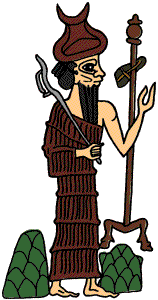

The Challenge -
Sin in the city of Ur

Sin was the first-born son of the important god Ellil who lived in Nippur. Nippur was a rich city full of wonderful plants and animals. Sin, who lived in Ur, decided to visit his father by boat. He loaded the boat with trees, plants and animals and set off from the docks of Ur. On his way he stopped at several places and was greeted by local gods. Eventually he reached Nippur where he told the gate-keeper about all the presents he had brought. Ellil was so pleased to see his son that he prepared a huge feast and they sat down together. At the end of the meal Sin asked for things in return for his presents. Ellil made water rise in the rivers. As a result the fields produced lots of agricultural produce.
|
|